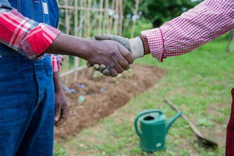

Services
We offer a variety of services, including farming consultations, workshops, and farm-fresh produce. We also have a veteranian clinic which offers a wide range of services, including routine check-ups, vaccinations, surgery and more for your cattle and poultry.
Farming Workshop
We offer workshops where by our experts teach farmers on how to improve their farm.

Farming Consultation
Farmers are able to talk one on one with our experts regarding the farm.
Sell Organic Fertilizer
We sell nice organic fertilizer for fresh farm produce.

Veterinary services
Offered to sick animals, for health check-ups and also vaccination.

Link farmers
Various farmers from different parts of the world are able to link and form businesses and ideas.

Modern Farm Tractor
We offer Modern tractor services and alsorent it out to large-scale farmers.
See more